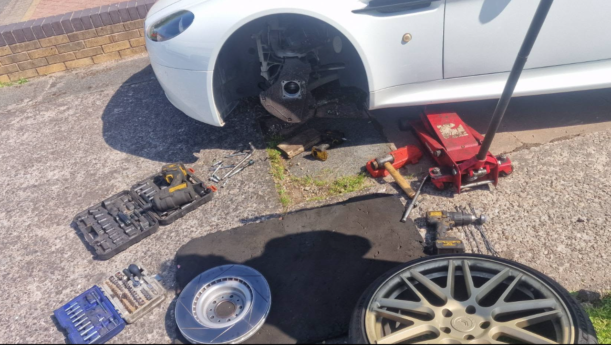
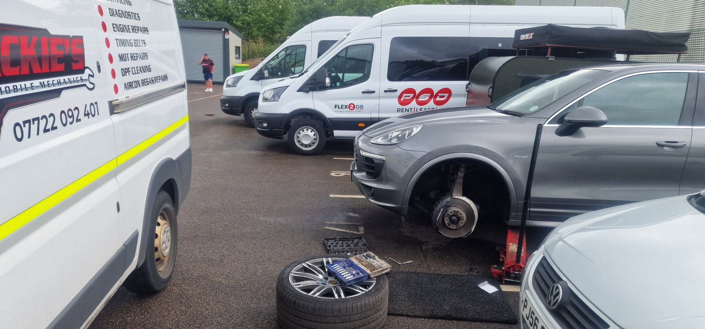
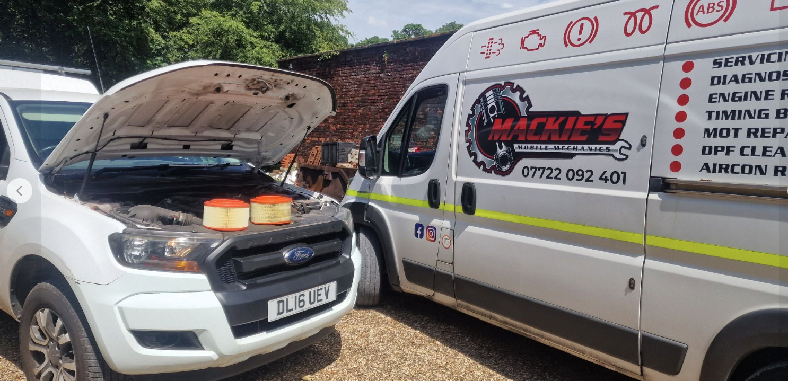
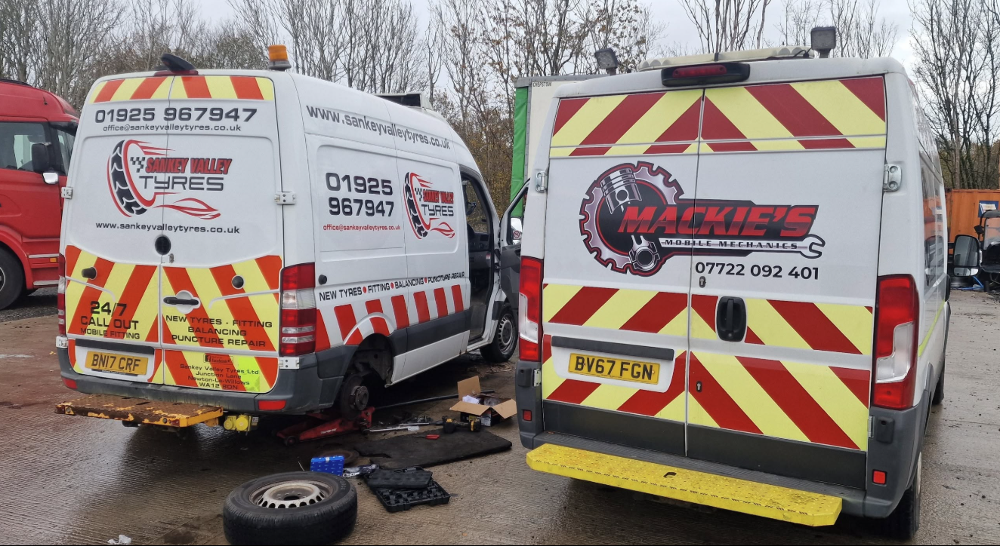
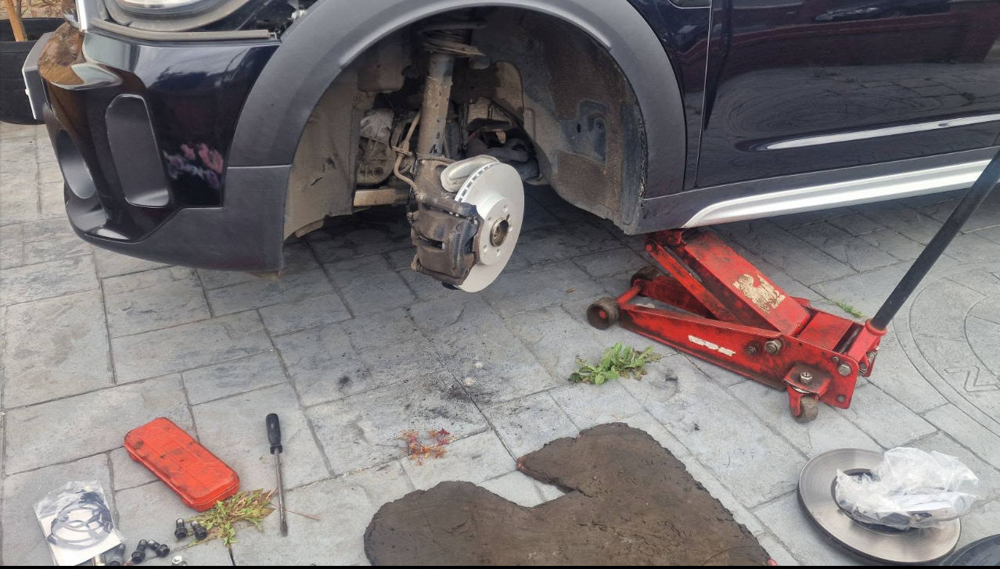
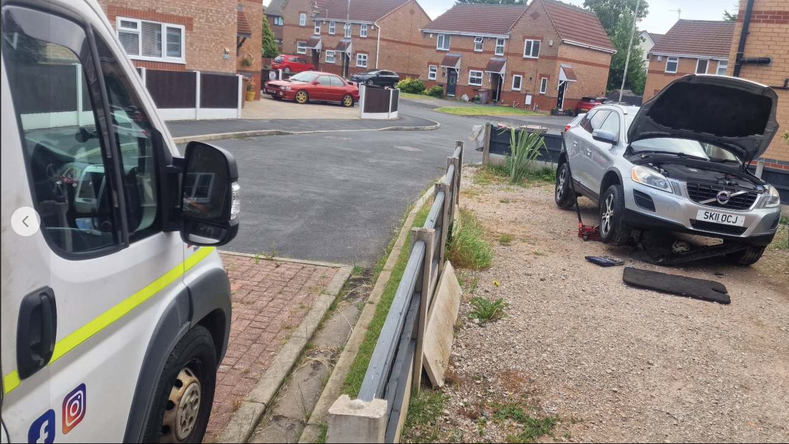
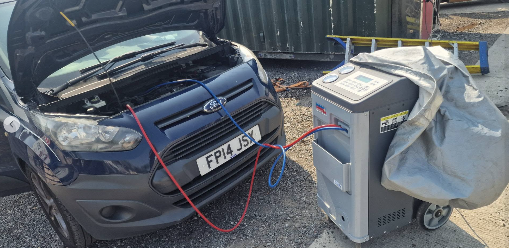
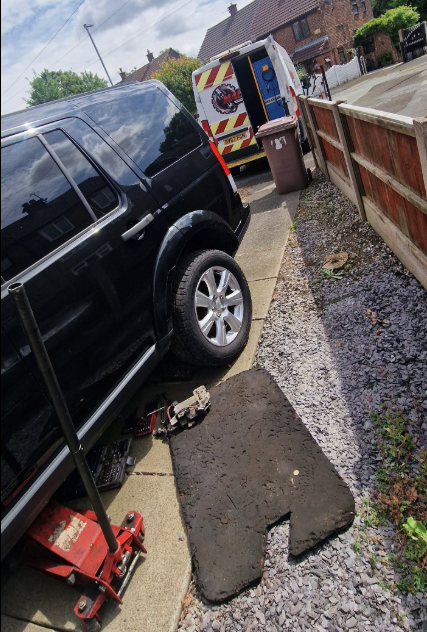

Vehicle Servicing
Full and interim car servicing for all makes and models.
Professional vehicle servicing, repairs and diagnostics at your home, workplace or roadside. Honest pricing, reliable workmanship and no unnecessary upselling.
Vehicle servicing, car servicing, brake repairs, brake pad replacement, car maintenance, vehicle inspection, engine diagnostics, suspension repairs, steering repairs, vehicle battery replacement, exhaust repairs, MOT preparation, fault finding and general mechanical repairs.
Full and interim car servicing for all makes and models.
Brake repair, brake pad replacement, discs, drums and brake fluid work.
Clutch replacement, checks and related mechanical repairs.
Diagnosis and repair of handling, steering and suspension issues.
Exhaust repairs, replacements and fitting.
Vehicle battery replacement, battery testing, battery supply and fitting for all makes and models.
Car inspection, pre-MOT checks and repairs to help get your vehicle ready.
Fault code reading, engine diagnostics and practical repair advice.

Brake repair and brake pad replacement work carried out by Mackie's Mobile Mechanics.

Car maintenance and vehicle servicing for customers across the North West.

Mackie's Mobile Mechanics is an independent mobile mechanic in Newton-le-Willows, providing vehicle servicing, brake repairs, brake pad replacement, engine diagnostics, vehicle inspections and mechanical repairs across Newton-le-Willows, Haydock, Golborne, Warrington and surrounding areas.
The service is built around convenience, honest advice and reliable workmanship, bringing the garage to your home, workplace or roadside where suitable.
Based in Newton-le-Willows and covering surrounding towns and local areas.
Recent vehicle servicing, brake repairs, brake pad replacement, vehicle inspections, suspension repairs, engine diagnostics, air conditioning regas, car maintenance and commercial vehicle repairs completed across Newton-le-Willows, Haydock, Golborne, Warrington and surrounding areas.
Brake pad replacement and brake repair completed in Newton-le-Willows. Mobile mechanic service covering brake discs, brake pads and vehicle safety inspections.

Vehicle battery replacement and roadside breakdown assistance carried out for a local business customer. Fast diagnosis, battery testing and replacement service available across Newton-le-Willows and surrounding areas.

Front brake pads and discs replaced for a customer in Newton-le-Willows. Helping maintain braking performance and road safety.

Vehicle inspection and car diagnostics carried out in Warrington. Helping local drivers identify faults before costly repairs.

Air conditioning servicing and regas work to restore cooling performance for local drivers.
Vehicle maintenance and car servicing completed for a Porsche owner in the North West.

Suspension and steering repair completed on a Land Rover. Restoring ride quality, handling and vehicle safety.

Engine repair work completed on a commercial vehicle in St Helens. Mechanical repairs and diagnostics carried out on-site.
See why local customers recommend Mackie's Mobile Mechanics.
"Excellent service and very reliable. Highly recommended."
Darran Lawson"Turned up on time and fixed the issue quickly."
Ala Ahmed"Professional, knowledgeable and fairly priced."
Rick LoughmanCommon questions about vehicle servicing, brake repairs, battery replacement, engine diagnostics, MOT preparation and mobile mechanic services in Newton-le-Willows, Warrington and surrounding areas.
Yes. Mackie's Mobile Mechanics provides mobile mechanic services at homes, workplaces and suitable roadside locations across Newton-le-Willows, Haydock, Earlestown, Golborne, Warrington, St Helens and surrounding areas.
We cover Newton-le-Willows, Haydock, Earlestown, Golborne, Warrington, St Helens, Lowton, Leigh, Ashton-in-Makerfield, Winwick, Burtonwood and nearby areas.
Yes. We provide mobile battery testing, battery replacement and battery fitting services for many vehicle makes and models. This means you don't need to arrange recovery or visit a garage for a flat battery.
Yes. We provide brake pad replacement, brake disc replacement, brake inspections and general brake repairs to help keep your vehicle safe and roadworthy.
Yes. We provide engine diagnostics, fault code reading and vehicle fault diagnosis for many mechanical and electrical problems.
Yes. We provide interim servicing, full servicing, oil changes, filter replacements and general vehicle maintenance for many makes and models.
Yes. We carry out vehicle inspections, MOT preparation and repairs to help identify and resolve issues before your MOT test.
Yes. We carry out servicing, repairs, maintenance and diagnostics on many vans and commercial vehicles throughout Newton-le-Willows and the surrounding areas.
Costs vary depending on the repair or service required. Contact Mackie's Mobile Mechanics for a free, no-obligation quote and honest advice.
A mobile mechanic brings the garage to your home or workplace, helping you save time and avoid the inconvenience of arranging transport, recovery or garage visits.
Call, WhatsApp or check the Google reviews before getting in touch.